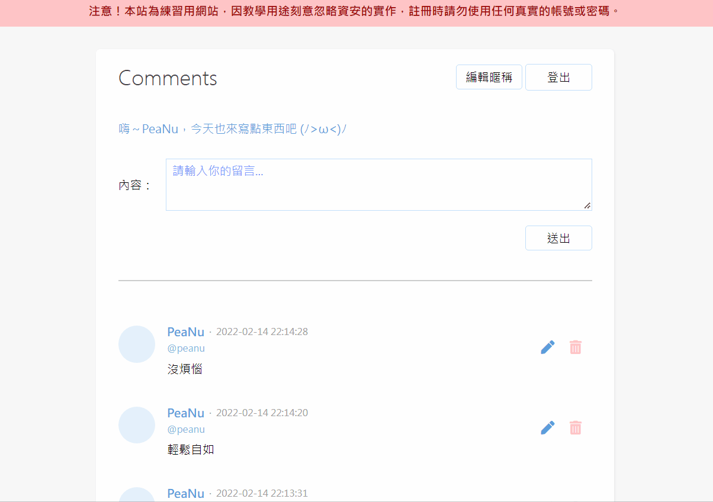

繼續努力四個月。
進度
今天延續 [BE101] 的剩餘內容，留言板這個專案也終於要畫下一個結尾了。繼續期待之後的網站部屬。
學到的事情
終於把留言板做成一個比較完整的專案了：

現在多了編輯、刪除和分頁的功能，在學完後也了解到為什麼這些功能要留到最後才教。雖然 MySQL 是個關聯式資料庫，但在前面幾週都沒有實際發揮「關聯」的功能，很多東西都是獨立寫死的。
「資料庫正規化」就是真正利用關聯的特性來把每個 table 給做關聯。一開始不教這個應該是因為比較複雜，而且 Join 語法相較於一般的 SQL 又更複雜一些，也許是基於這個理由才留到最後教吧，我猜的。
分頁功能是個蠻有趣的東西，像分頁的實作方式其實有分成兩種，一種是 offset，一種是 cursor。這兩種在我串 Twitch API 的時候都用過，當時覺得 offset 直覺多了，cursor 是什麼反人類的作法？但後來看完文章後才了解原來 cursor 的好處還蠻多的，怪不得 Twitch 新版 API 要用 cursor 來取代 offset。但對於初學者來說我還是認為 offset 絕對比較直觀好懂。
也因為之前串 Twitch 的時候就用過分頁功能了，所以今天在實作時沒碰到太大困難。有趣的地方是原來分頁功能是用 SQL 的方式來實現的這點很有意思，也從這次實作更理解前後端之間的脈絡。
題外話
希望我能在接下來的時間變得更強。
許願池
明天把 [BE101] 剩下的部分作完就能開始做作業了，加油！